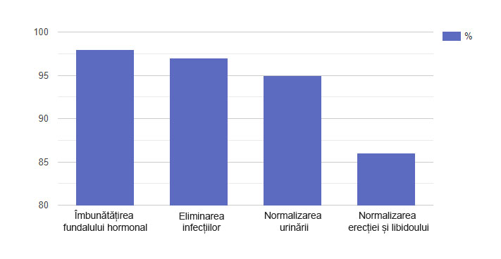

Dr. Oz: Amelia, George, bun venit în studio! Amelia, acum câteva luni v-aţi adresat la noi pentru ajutor. Spuneţi-mi care e motivul.
Amelia D.: Da, eu am fost inițiatorul. Am crezut că căsnicia noastră a fost aproape de final pentru că soțul s-a schimbat foarte mult. L-am convins să se adreseze la Dvs. pentru ajutor. Spectacolul dvs. - este ultima noastră speranță. George nu mi-a spus nimic și nu a vrut să se adreseze specialiștilor.
Dr. Oz: Amelia, vă rog spuneţi-ne de ce aţi decis că George s-a schimbat?
Amelia D.: Aproximativ șase luni nu am făcut sex. Am cumpărat deja lenjerie sexy și am pregătit cină romantică pentru el. Nimic nu a ajutat! Se părea că nu mă privea deloc ca pe o femeie. Bineînțeles, primul lucru pe care l-am crezut a fost că cauza era în mine. Plângeam, eram îngrijorată ... Am început să ne certăm în mod constant pe acest motiv.
Dr. Oz: Poate că avea o amantă. Nu v-aţi gândit la asta?
Amelia D.: Desigur, m-am gândit. Dar lucrează ca freelancer și își petrece cea mai mare parte a timpului acasă. Pur și simplu nu are timp să se întâlnească cu amanta sa. Dar pentru porno, cum sa dovedit, timp avea.

Dr. Oz: Wow, chiar așa?!
Amelia D.: Da, l-am prins în baie. A uitat să închidă ușa. M-am enervat foarte mult: cu mine, înseamnă că refuză să facă sex, iar pe femei goale necunoscute masturbează. Am început să ne certăm și George s-a înfuriat atât de tare încât a aruncat sticla de șampon care mi-a nimerit chir în cap. Chiar şi ambulanța a venit atunci la mine pentru că sângeram pe ceafă. Mi-a fost teamă că aș putea avea o contuzie. Dar totul a mers bine. Am înțeles că se întâmplă ceva cu George, dar nu știam ce este.
Dr. Oz: Am o întrebare pentru George: ce sa întâmplat cu adevărat? De ce nu i-aţi spus soției sale care e motivul unui astfel de comportament?
George D.: În primul rând, vreau să spun că mi-e rușine de comportamentul meu. Și vreau să cer iertare de la Amelia în fața întregii țări. Trebuia să-i fi spus ce mi s-a întâmplat. Dar eu însumi m-am speriat: am avut dureri la nivelul penisului în timpul ejaculării. Apoi, nevoia de a se urina a crescut, a început să mă trezesc chiar și noaptea. Am început să dorm prost, mi s-a înrăutățit apetitul și am urmărit un sentimentul de depresie. Când s-au adăugat problemele de erecție la toate acestea, nu-mi era pofta de sex deloc. M-am închis în sine și mi-a fost frică să-i mărturisesc Ameliei că am probleme. Îmi era teamă că voi deveni un bărbat inferior și că soția mea va pleca. De asemenea, am sperat că lucrurile se vor îmbunătăți într-un fel.
Dr. Oz: Cum credeți, George, cu ce problemă v-aţi confruntat?
George D.: E greu de spus, poate ceva cu prostata.
Dr. Oz: De fapt, există un adevăr în răspunsul dvs. Știm acest lucru, deoarece înainte de a veni la studio, ați fost testat și examinat de specialistul nostru. Sunteţi gata să auziţi numele patologiei sale?
George D.: Da.
Dr. Oz: Aveți prostatită.
Amelia D.: Oh, Doamne!
Dr. Oz: Da, sună intimidant. Să aflăm dacă acest lucru este de fapt de la un specialist în sănătatea bărbaților la care ați fost examinat. El este oaspetele nostru astăzi. Jack King, vă dau cuvântul.
Jack King: De fapt, prostatita lui George sa transformat deja de la stadiul inițial la cel ascuțit. Și s-a întâmplat aceasta în șase luni.
Faptul este că, în stadiul inițial, prostatita este cel mai adesea asimptomatică. Uneori, bărbatul poate simți disconfort în scrot și în zona inghinală, greutate în abdomenul inferior. Dar, cel mai adesea, pur și simplu nu le dau seama: ei bine, cine va merge la specialist, doar pentru că de câteva ori la împuns în zona inghinală? La urma urmei, acest lucru poate fi atribuit atât oboselii, cât și lenjeriei incomode ...

Un alt semn - călătoriile mai frecvente la toaletă. Adesea, din acest motiv, bărbații încep să se trezească noaptea. Cu toate acestea, mulți nu răspund la acest lucru. Dar apoi va deveni mai rău: procesul va deveni dificil, va fi însoțit de arsură, durere, deoarece prostata bolnavă va crește în dimensiune și va stoarce uretra. În același timp, există o mare probabilitate ca inflamația să treacă la alte organe: vezica urinară și, ulterior, rinichi.
Desigur, apar probleme şi în sfera sexuală. Dorința de intimitate cu partenerul apare mai rar, erecția eșuează, suferă calitatea orgasmului - toate acestea sunt atribuite oboselii și stresului.
Cu cât mai departe, cu atât mai rău. Când simptomele prostatitei încep să devină mai pronunțate, acest lucru nu poate însemna decât un singur lucru - procesul inflamator a căpătat forță și s-a transformat într-o formă activă. Dacă continuați să amânaţi terapia, totul se poate termina cu cancer de prostată!
Puteți fi în pericol!
Faceți un mic test pentru a vă testa sănătatea
Răspundeți la 5 întrebări și aflați dacă aveți un motiv de îngrijorare
Când urinați, simțiți durere și arsură?
Vă ridicaţi noaptea la toaletă de mai multe de 1?
Simți anxietate și depresie?
Ați observat o scădere a potenței?
Câți ani aveţi?

Rezultatul:
Vă mulțumim pentru răspunsurile dvs.! Din păcate, sunteţi la doar câțiva pași de consecințe fatale. Pentru a nu înceta să fiţi bărbat în sensul cel mai adevărat al cuvântului, începeţi terapia acum!
Începeți să acționațiMulțumesc! Aţi trecut testul.
Dr. Oz: George are o șansă de salvare fără masaj rectal, lumânări și clisme?
Jack King: Din păcate, majoritatea mijloacelor care sunt în vânzare pot ajuta în cel mai bun caz doar pentru o vreme. Odată ce inflamația se va agrava din nou, durerile și alte simptome neplăcute vor reveni.
Dar este şi veste bună - de câteva săptămâni, George a luat un remediu nou , care este lăudat de mulți experți. El are capacitateade a afecta pozitiv activitatea întregului sistem genito-urinar. În special, ajută la îmbunătățirea fundalului hormonal, eliminarea infecțiilor și inflamațiilor, purificarea sângelui, creșterea libidoului și îmbunătățirea erecțiilor.
În plus, nu creează dependență și are un efect pozitiv asupra organismului, deoarece conține ingrediente naturale.
Datorită acestui remediu, indicatorii lui George s-au îmbunătățit semnificativ și acum se simte mult mai bine.
Dr. Oz: George, este într-adevăr așa?
George D.: Este adevărat. După câteva zile de luare a capsulelor , a dispărut durerea în penis. Apoi am început să merg la toaletă mai rar și nici măcar nu mă trezesc noaptea. Dorm acum ca un copil și starea de spirit sa îmbunătățit, deși nu am crezut în mod deosebit, că ceva mă poate ajuta.

Jack King: Componentele sunt echilibrate cu atenție, acționează într-un mod complex asupra cauzei problemei, crescând astfel eficacitatea cursului.
Iată câteva dintre ingrediente:
- extract de pin - are proprietăți antiinflamatorii și dezinfectante. Se utilizează pentru tratarea rinichilor și a tractului urinar, la colici renale, urolitiază;
- extractul de afine - ajută la infecții ale sistemului genito-urinar. Efectul se datorează proantocianidinei, care poate preveni pătrunderea bacteriilor în tractul urinar;
- extractul de muşeţel- componenta ajută la curățarea sângelui și la întărirea sistemului genito-urinar cu oxigen și vitamine; extractul de urzică - stimulează sinteza principalului hormon masculin, testosteronul. Aceasta, la rândul său, are un efect benefic asupra întregului sistem genito-urinar al unui bărbat - de la potență la sănătatea prostatei.
Dr. Oz: În studio este, de asemenea, Nicholas Green, care se ocupă de distribuția . Bună ziua, domnule Nicholas! Știu că aveți cifre interesante pe care sunteți gata să ni le împărtășiți.
Nicholas Green: Bună ziua! Într-adevăr, mă ocup de distribuția . Am efectuat recent un sondaj în rândul a peste 300 de cumpărători . Majoritatea au obținut rezultate excelente. Sondajul a constatat că funcționează într-adevăr, dar, spre deosebire de pastilele albastre, promovează un efect mai durabil, care tinde să dureze chiar și după terminarea cursului.
Iată rezultatele de bază pe care le puteți aștepta de la remediu:
- Îmbunătățirea fondului hormonal: testosteronul și aldosteronul - hormoni importanți pentru sănătatea prostatei.
- Eliminarea infecției în sistemul genito-urinar: bacteriile patogene nu au șanse de viață.
- Elimină durerea și alte simptomele neplăcute.
- Normalizarea urinării.
- Normalizarea erecției și creșterea dorinței: actul sexual poate deveni mai lung, iar libidoul se va intensifica.
Mai multe rezultate ale sondajului în cifre:

Puține alte mijloace se pot lăuda cu aceiași indicatori.
În plus, am vești bune. Acum, pentru există o reducere de 50%. Am decis să organizăm o promoţie, deoarece am decis să trecem complet la vânzările online. În farmacii, cazurile de falsuri au crescut și nu am putut controla acest moment. Promoția va dura doar până la (inclusiv). Și este puțin probabil să se repete vreodată.
- Completați formularul de comandă până la (inclusiv).
- Răspundeți la apelul operatorului și confirmați comanda.
- Obțineți pachetul la cel mai apropiat oficiu poștal în termen de 3-6 zile de la data comenzii.
Dr. Oz: Dragi experți și oaspeți ai studioului, pentru mine principalul rezultat este să aud că George Davis se simte mai bine și să văd zâmbetul pe fața soției sale Ameliei. Mă bucur că am reușit să vă ajutăm. De asemenea, mă bucur că am ridicat subiectul prostatitei. Un subiect pe care toți bărbaţii preferă să-l ascundă. Sper că după programul nostru se vor teme mai puțin. La urma urmei, puteți scăpa de prostatită acum fără proceduri umilitoare, de exemplu, cu ajutorul capsulelor . Asta e tot. Îmi iau rămas bun și ne vedem în curând în studio!
ATENŢIE: Acum pentru acţionează Promoția. Puteți obține capsulele pentru sănătatea masculină cu o reducere de 50%. Pentru a face acest lucru, trebuie să faceți o cerere de mai jos până la (inclusiv). Cantitatea de mărfuri promoționale este limitată.
Comentarii